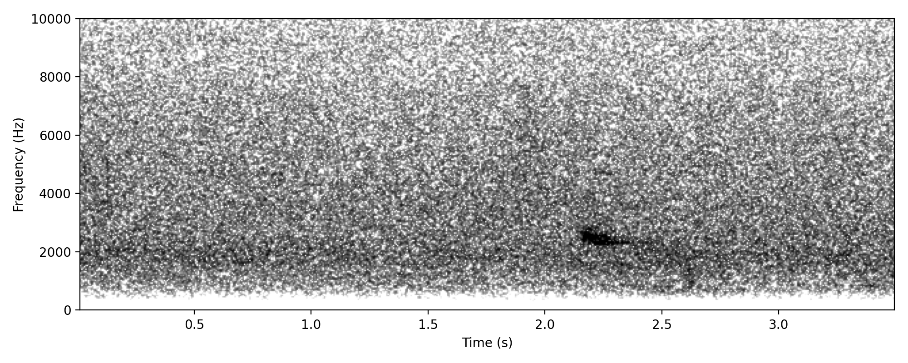

Low but very slightly tremulous or shrill note, focused at 2.5 kHZ
Evidence for identification
Sounds like the familiar daytime contact call of this species.
Confidence statement
Needs further work to rule out other species being responsible for this noise, but certainly to ear the examples so far have the quality of this species' call.
Similar species / confusion risks
Other passerines.
Project detections: 9 annotations; 4 nights; recorded in March, April, May; most recent detection 23 May 2026.
Project clips
This is manually edited for noise reduction and a high pass filter at 1kHz Featured

Carindale (-27.52, 153.11), 26 Mar 2026, 22:32:58, Annotation 3383, Annotator: Richard Fuller, Clip manually edited for clarity